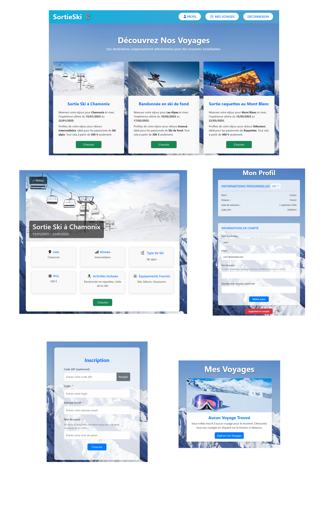

SortieSki - Event Management Platform (Third-Year Bachelor's Project)
- Skills used: Vue.js, API Platform, MySQL, Docker, JWT, Permissions, Symfony, REST API, Agile methodology.
- Link: Live website
Development of a REST API with Symfony for managing ski trips (creation, registration, cancellation, user roles, etc.). The API is connected to a Vue.js frontend to provide a user-friendly interface. In addition, a directory module called Les Jaunes Pages is linked to the application to manage and authenticate participants.
Main features:
- Trip management: create, edit, and delete trips, as well as define the destination, date, price, and included activities.
- Registration / cancellation: authenticated users can join or leave a trip.
- Roles and permissions:
ROLE_USER: can participate in trips.ROLE_ORGA: can create, edit, and delete the trips they organize.ROLE_ADMIN: can delete users and trips, with extended administration rights.
- Public or private participant list: each organizer can decide whether the list of participants is visible to others.
- JWT authentication: the API is secured and generates tokens to access protected endpoints.
The application communicates through JSON and supports full CRUD operations for both the “Trip” and “User” entities. The entire project is containerized with Docker to simplify deployment.
Technical details:
- MySQL database with migrations and fixtures for sample data generation.
- JWT authentication implemented with
LexikJWTAuthenticationBundle. - Fine-grained access control using Voters and annotations. For example, an organizer can only edit their own trips.
- Integration with the directory project Les Jaunes Pages: a
codefield links users to the directory API and ensures consistency between both systems. - Vue.js frontend for the public web interface: it calls the API endpoints and dynamically displays trips and registrations.
Developed as part of a team of four, this project was designed to strengthen our skills in web development, REST API development with Symfony, multi-role user management, and Docker-based containerization.
